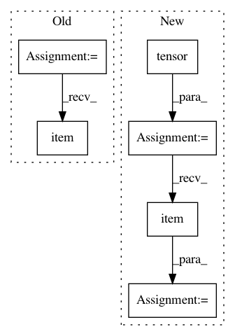

2381a50a70559340a0335288d648b4bb9a675588,slm_lab/agent/algorithm/dqn.py,HydraDQN,train,#HydraDQN#,498
Before Change
y = q_targets
losses = self.net.training_step(batch["states"], y)
logger.debug(f"losses {losses}")
batch_losses += losses.item()
batch_losses /= self.training_iters_per_batch
nanflat_loss_a += batch_losses
nanflat_loss_a /= self.training_epoch
loss_a = self.nanflat_to_data_a("loss", nanflat_loss_a)
After Change
total_t = util.s_get(self, "aeb_space.clock").get("total_t")
self.to_train = (total_t > self.training_min_timestep and total_t % self.training_frequency == 0)
if self.to_train == 1:
total_loss = torch.tensor(0.0)
for _ in range(self.training_epoch):
batch = self.sample()
with torch.no_grad():
q_targets = self.calc_q_targets(batch)
loss = self.net.training_step(batch["states"], q_targets)
total_loss += loss
loss = total_loss / self.training_epoch
// reset
self.to_train = 0
self.body.log_probs = []
self.body.entropies = []
logger.debug(f"Loss: {loss}")
self.last_loss = loss.item()
return self.last_loss
In pattern: SUPERPATTERN
Frequency: 3
Non-data size: 6
Instances
Project Name: kengz/SLM-Lab
Commit Name: 2381a50a70559340a0335288d648b4bb9a675588
Time: 2018-06-12
Author: kengzwl@gmail.com
File Name: slm_lab/agent/algorithm/dqn.py
Class Name: HydraDQN
Method Name: train
Project Name: allenai/allennlp
Commit Name: 87a61ad92a9e0129e5c81c242f0ea96d77e6b0af
Time: 2020-08-19
Author: akshita23bhagia@gmail.com
File Name: allennlp/training/metrics/attachment_scores.py
Class Name: AttachmentScores
Method Name: __call__
Project Name: allenai/allennlp
Commit Name: 0a456a7582da2ab4271756d7775bba84a75c8c0d
Time: 2020-08-17
Author: eladsegal@users.noreply.github.com
File Name: allennlp/training/metrics/categorical_accuracy.py
Class Name: CategoricalAccuracy
Method Name: __call__